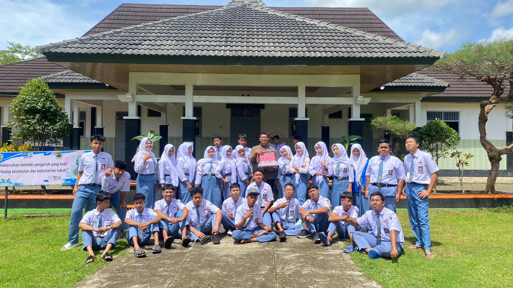
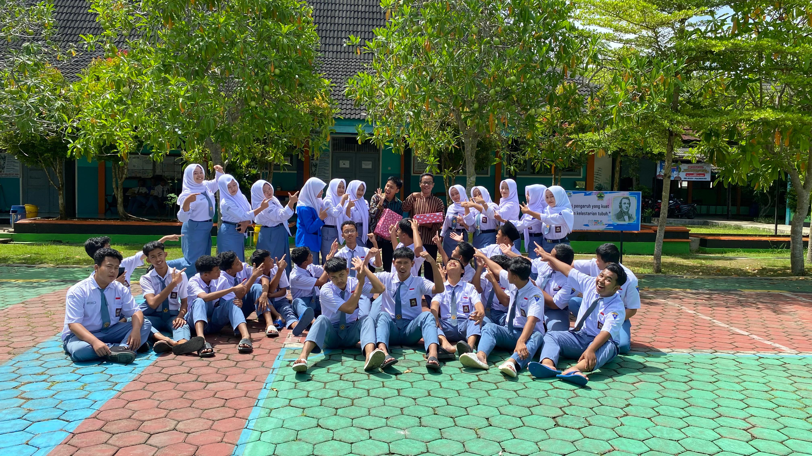
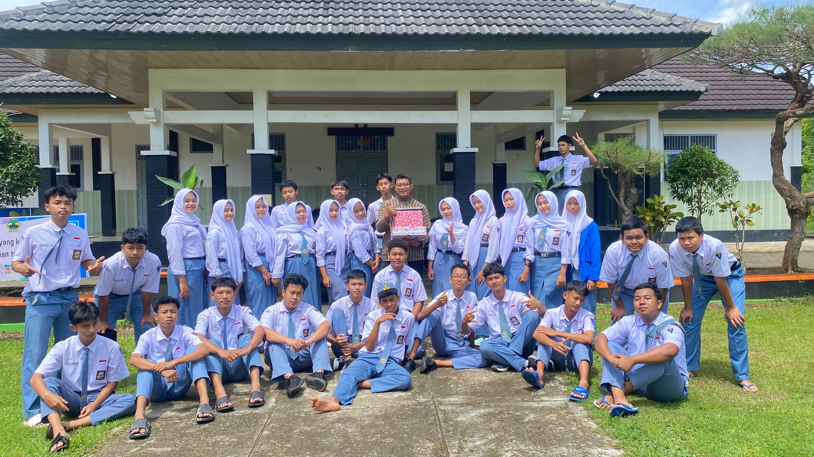

Generasi Hebat XTJKT1
Selamat datang di website resmi kelas XTJKT1 SMK Negeri 1 Pracimantoro.

Selamat datang di website resmi kelas XTJKT1 SMK Negeri 1 Pracimantoro.
Teknik Jaringan Komputer dan Telekomunikasi adalah jurusan yang fokus pada infrastruktur IT, mulai dari perakitan komputer hingga manajemen server dan keamanan jaringan.
Menjadi kelas yang paling solid, menguasai teknologi masa depan, dan selalu disiplin dalam praktik maupun teori.
| No | Nama Lengkap | Jabatan |
|---|---|---|
| 1 | Nama Contoh 1 | Ketua Kelas |
| 2 | Nama Contoh 2 | Sekretaris |
| 3 | ... | ... |
| Hari | Mata Pelajaran | Jam |
|---|---|---|
| Senin | Dasar TJKT | 07:00 - 12:00 |
| Selasa | Informatika | 08:00 - 10:00 |

Kegiatan 1

Kegiatan 2

Kegiatan 3

Kegiatan 4

Kegiatan 5

Kegiatan 6

Kegiatan 7

Kegiatan 8

Kegiatan 9

Kegiatan 10

Kegiatan 11

Kegiatan 12

Kegiatan 13